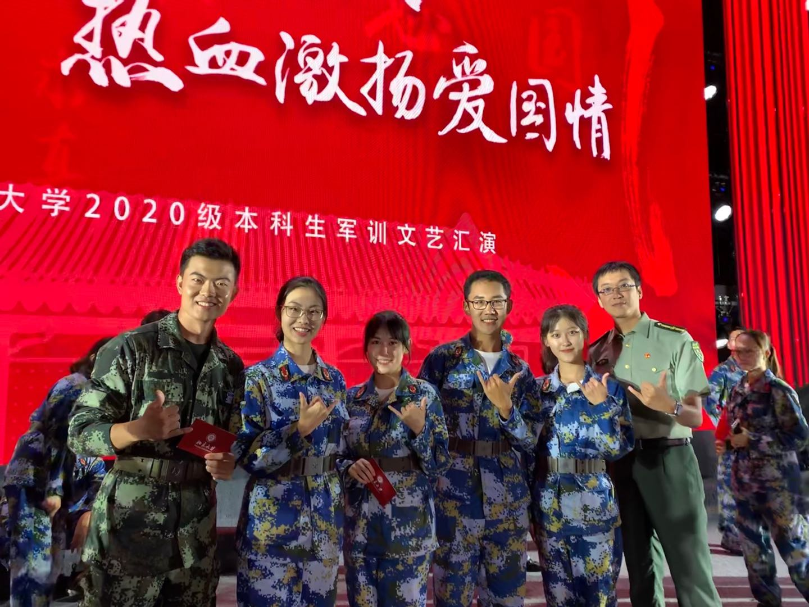

兴趣爱好
虽然能力一般，但是我还是喜欢尝试很多新鲜事物滴!大神带带我！
舞蹈是幼儿园开始学习，初中过了民族舞十级，然鹅，漫长的高中生活磨灭了我这方面的才能，希望大学可以捡一捡。 来一张小时候到北京演出的照片温故一下

主持也是小时候就培养起来的爱好。站在聚光灯下，面对不同的观众，每一次我都清晰地感受到握着话筒的手微微湿润、嘴角的笑容从僵硬到展舒、 身体从绷紧到放松，虽然每次都会担心自己说错词，但还真的没怎么发生过这类事故。这是一个赋予人自信与乐观的爱好，希望能在北大的校园里 继续找到属于自己的天地！